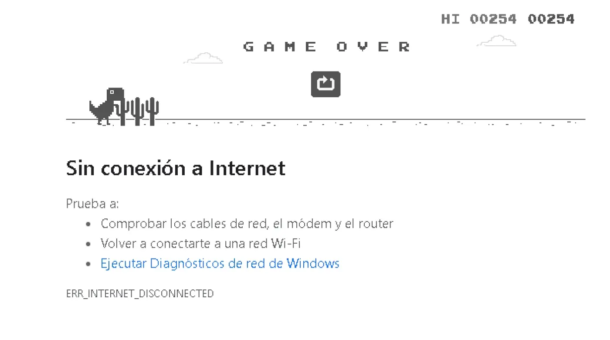
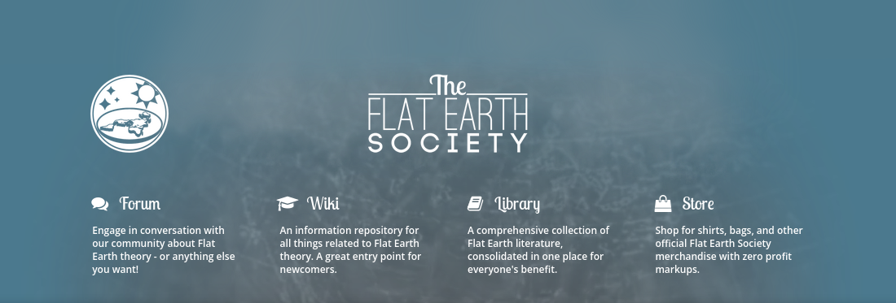
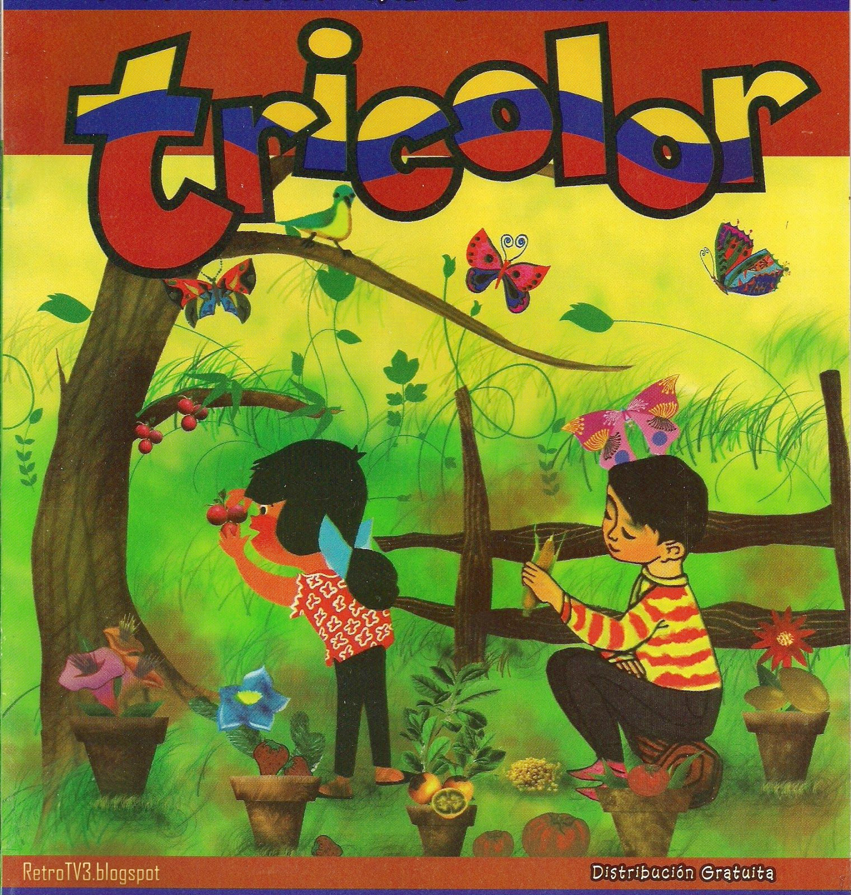
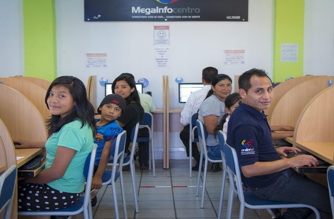
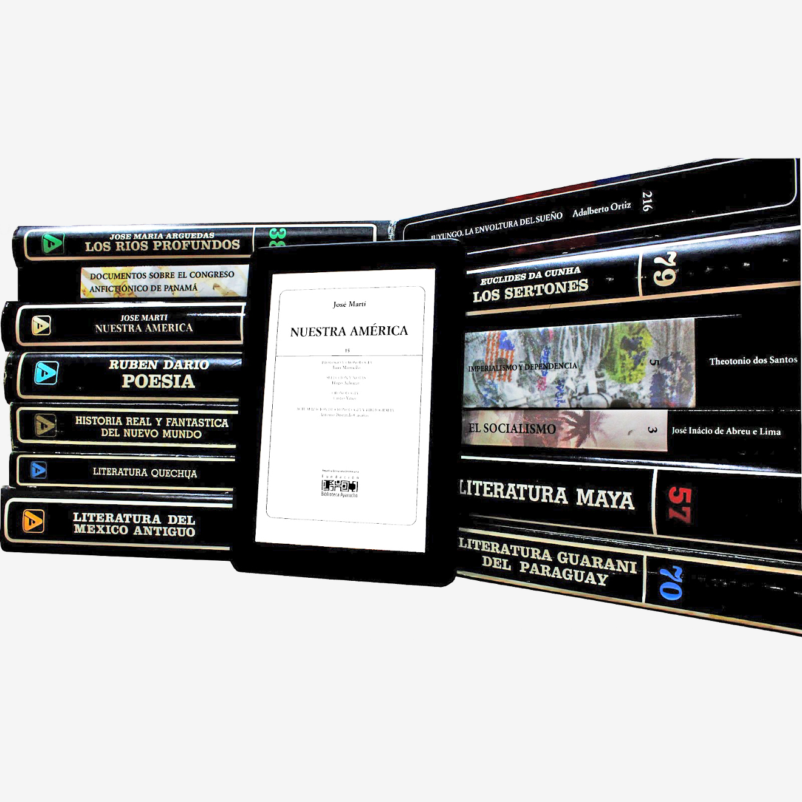

FREIRE
Plataforma para el conocimiento
La problemática
Limitaciones en acceso a canales de información
Parcialidad en las herramientas de búsqueda
Desconocimiento de fuentes fiables y de calidad

¿Qué es
FREIRE?
FREIRE es una aplicación multiplataformas para la distribución de contenidos multimedia de manera estructurada, cómoda, eficaz y pensada para poder garantizar el acceso a la información sin conexión al internet.
Con soporte para materiales en múltiples formatos (pdf, epub y mp4), FREIRE brinda a los usuarios acceso a una biblioteca de contenidos digitales desde cualquier dispositivo, con facilidades para el uso local de los recursos.
Proveyendo además una estructura para planes de estudios, organizada en tres niveles de especificidad.
- Programa académico (Pensum)
- Unidad académica (Materias)
- Objetivos específicos (Temas)
Aplicabilidad
En la educación
Garantíza de acceso a material de estudio de calidad y certificados
En la investigación
Divulgación de fuentes especializadas
En la cultura
Difusión de la producción cultural
Posibilidades a futuro
- Integración con Moodle
- Autoevaluación
- Aprendizaje de idiomas
- Calendarios para eventos
Características técnicas
La aplicación fue realizada utilizando Flutter el framework multiplataformas de Google, en el lenguaje Dart.
Para la persistencia de datos se usa el sistema de archivos junto con una base de datos SQLite.

El sistema de búsqueda está realizado en Rust utilizando la librería Tantivy, haciendo de interfaz de funciones foráneas de Dart para comunicarse.
El Backend de la aplicación utiliza Parse Server y las analíticas corren sobre Matomo, todo sobre contenedores Docker

Requerimientos de la plataforma
Requerimientos mínimos de la aplicación
- Android: API 31 (10)
- IOs: 11
- Windows: 10
- Linux: Debian 10
- MacOs: El Capitan
- Firefox: 72.0
- Chrome: 84.0
- Safari: El Capitan
Requerimientos del servidor
Recomendamos el uso de al menos 2 servidores, uno para ParseServer y otro para las analíticas (Matomo). Los requerimientos de espacio dependen de cómo se decida almacenar los archivos, considerando que los videos pueden ser lo más pesado (si se almacena además en múltiples calidades).
Matomo recomienda como mínimo un servidor con 2 CPU, 2GB RAM y 50 SSD, capacidades suficientes para manejar 100 000 sesiones de la aplicación al mes, pero estas capacidades deben ser monitorizadas y los equipos actualizados de forma acorde.
Servicio de videos
La descarga de videos se hace desde YouTube, utilizando la librería YoutubeExplode. Esta librería hace uso de los servicios de Google, pero no está mantenida por ellos y por tanto no se puede garantizar su estabilidad ni funcionalidad.
Búsqueda en la versión web
La versión de WEB requiere de un servidor de búsqueda aparte para poder realizar búsquedas de texto sobre los recursos.
Estado del desarrollo
Actualmente la plataforma se encuentra en un estado avanzado de desarrollo, en las versiones de Linux, Android y Web.
Completado
- Internacionalización
- Estructura organizativa
- Sistema de filtrado
- Interfaz gráfica básica
- Control de acceso
- Manejo de PDF, Epub, Video
- Persistencia de datos
En proceso
- Manejo de listas de reproducción y colecciones
- Motor de búsqueda
- Sistema de gestión de contenidos
- Arreglos generales
Próximos pasos
- Roles y usuarios
- Seguridad del servidor
- Actualizaciones sin conexión
- Interfaz gráfica personalizada
- Desarrollo para Windows, IOs y MacOs
Oferta
Aplicaciones
- Página de llegada del proyecto.
-
Aplicación adaptada y funcional para:
- Linux (Debian 10)
- Windows 10
- IOs 11
- MacOs El Capitan
- Android 10
- Web (navegadores con soporte para service workers)
Documentos y manuales
- Documentación técnica de la aplicación
- Memoria descriptiva del diseño de la aplicación
- Manual de usuario de la aplicación
Código
- Publicación del código fuente de la página de la aplicación en el dominio público
- Publicación del código fuente de FREIRE en el dominio público
- Publicación del código fuente de la aplicación adaptada en el dominio público
Servicios
- Diseño interfaz gráfica de la aplicación
- Apoyo técnico en el despliegue de la aplicación
- Apoyo técnico para lanzamiento de la aplicación (publicación en iStore, Google Play, etc)
- Mantenimiento y seguimiento de la aplicación*
- Formación del personal en el desarrollo y manejo de la aplicación*
Requerimientos para el desarrollo
Tiempos
El proyecto consta de dos etapas:
- Desarrollo y despliegue: con una duración estimada de 10 semanas.
- Seguimiento: con una duración de 24 semanas.
Recursos financieros
La ejecución del proyecto costaría un estimado 70 000$ para gastos de personal, desarrollo técnico y gráfico, equipos, diseño instruccional, y los derechos de uso del software.
Recursos materiales
- Lineamientos institucionales
- Acceso a material de archivo
- Préstamo de equipos de prueba
- Oficina para 5 personas